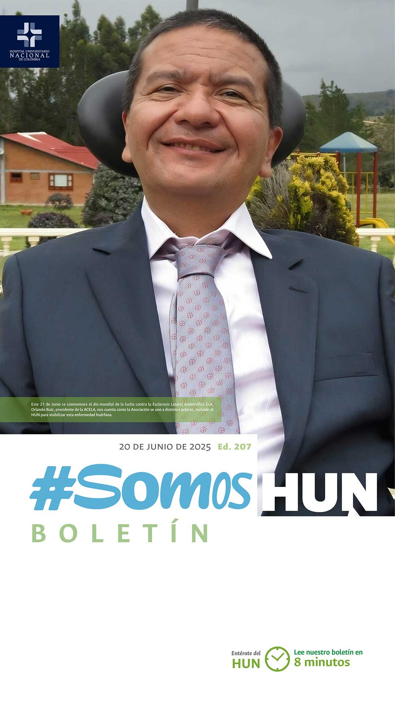
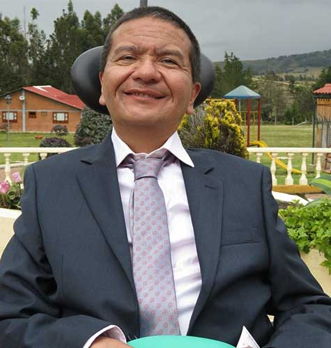
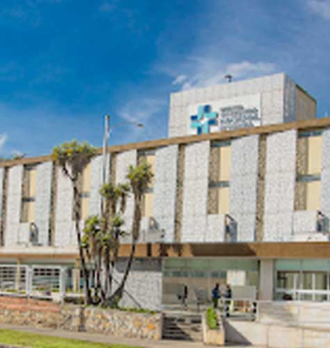
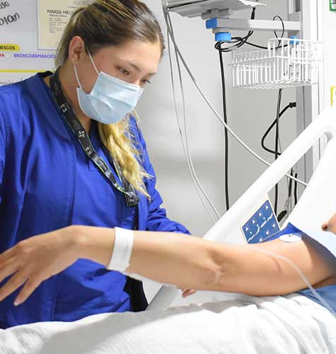
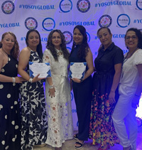
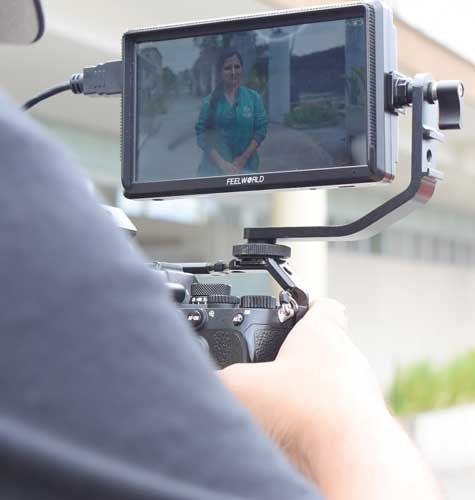

Ver todos los boletines
Ustedes no están solos, verde esperanza para los pacientes con ELA
Cada 21 de junio, coincidiendo con el solsticio de verano, se conmemora el Día Mundial de la Esclerosis Lateral Amiotrófica (ELA), una enfermedad neurodegenerativa que afecta las neuronas motoras del cerebro y la médula espinal. En esta fecha, organizaciones de pacientes, hospitales e investigadores de todo el mundo se unen para visibilizar esta condición y renovar su compromiso con quienes la enfrentan día a día.Leer más
LANZAMIENTO ECBE FIBRILACIÓN AURICULAR
Hoy se publicó el Estándar Clínico Basado en la Evidencia de Diagnóstico, tratamiento, rehabilitación y seguimiento de los pacientes adultos con fibrilación auricular.Leer más

El Hospital Universitario Nacional obtuvo el 100 % en auditoría del FOMAG
Durante la segunda semana de junio recibimos la visita de un equipo auditor del Fondo Nacional de Prestaciones Sociales del Magisterio (FOMAG), quien evaluó el cumplimiento de 20 componentes clave en la atención a sus afiliados.Leer más

La voz del paciente: Informe de Satisfacción y PQRS – Mayo 2025
Durante mayo de 2025, el Hospital Universitario Nacional de Colombia (HUN) registró avances importantes en la medición de la experiencia del usuario, destacando tanto logros como aspectos críticos que requieren atención inmediataLeer más

Orgullo HUN: Enfermería presente en el 25° Congreso Internacional
de Enfermería 2025
¡Nuestra participación en el Congreso Internacional de Enfermería fue todo un éxito!
Leer más

Así gestionamos la atención a medios de comunicación en el HUN:
transparencia, claridad y vocería institucional
En el HUN, la relación con los medios de comunicación se fundamenta en los principios de accesibilidad, claridad, articulación y oportunidad. Como parte de nuestro compromiso con la comunicación informativa, hemos estructurado un procedimiento detallado que garantiza la entrega de información veraz y pertinente, tanto para la opinión pública como para nuestros grupos de interés, salvaguardando siempre la confidencialidad de los pacientes y la reputación institucional.
Leer más